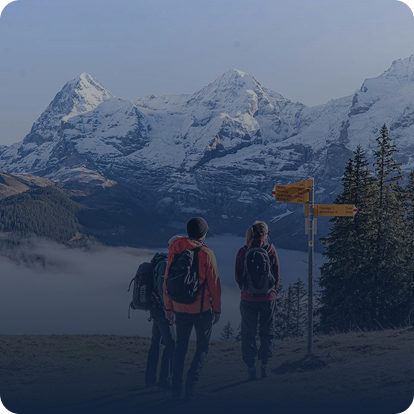
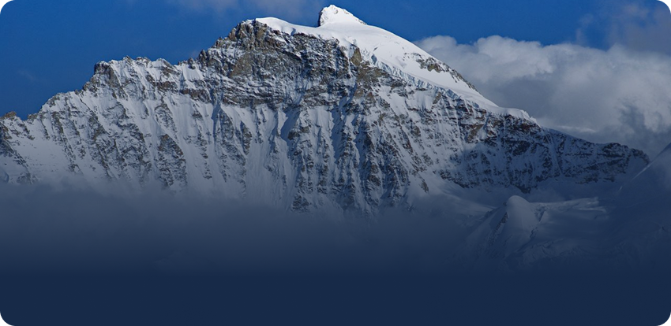
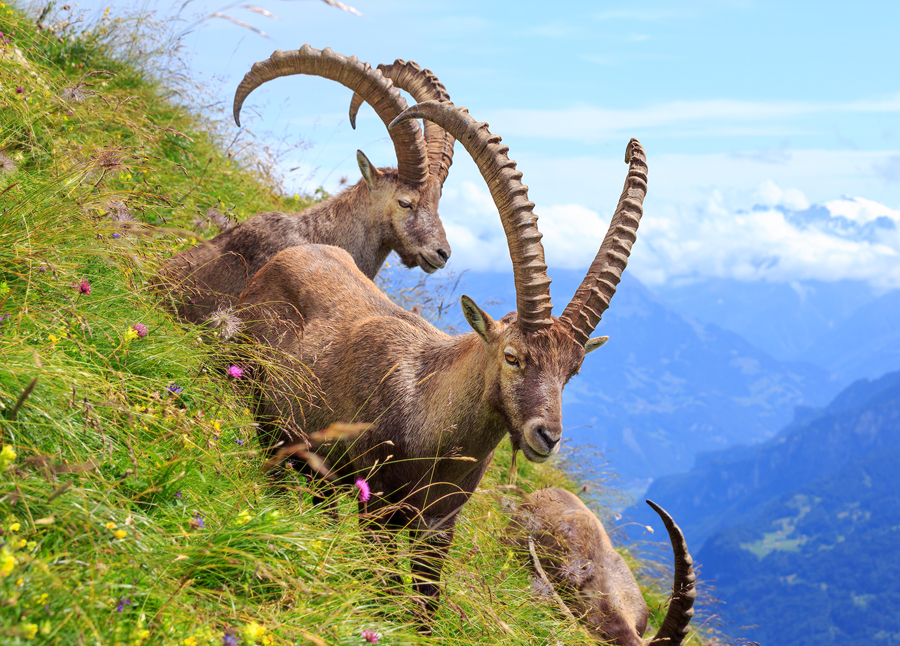
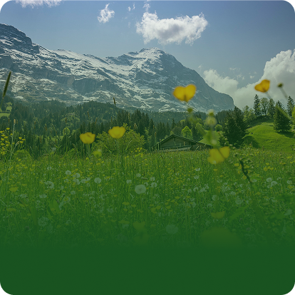
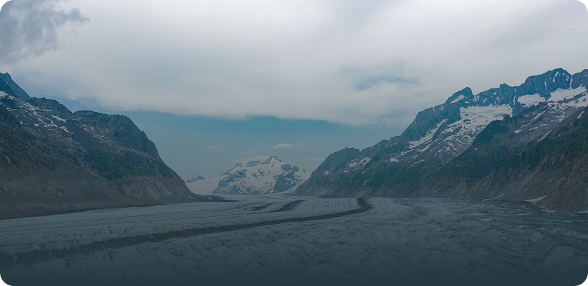

Le plus grand glacier des Alpes et un paysage montagneux
d'exception
Le site Jungfrau-Aletsch est le premier site naturel des Alpes à être inscrit au patrimoine mondial de l'UNESCO

Avec ses 23 kilomètres de long, c'est le plus grand glacier des Alpes. Il offre un spectacle naturel impressionnant et un témoignage unique de l'histoire géologique de notre planète.
Le site abrite une biodiversité remarquable avec des espèces végétales et animales adaptées aux conditions extrêmes de haute montagne.
Reconnu pour sa valeur universelle exceptionnelle, le site illustre parfaitement la formation des Alpes et l'évolution des glaciers.
Une mosaïque de paysages alpins spectaculaires

Sentiers panoramiques
En savoir plus
Le sommet emblématique à 4 158 mètres
En savoir plus
Plusieurs centaines d'espèces animales alpines
En savoir plus
Une diversité florissante
En savoir plus
400 millions d'années d'histoire
En savoir plus
23 km de glace millénaire
En savoir plusLe site Jungfrau-Aletsch s'engage pour rendre la montagne accessible à tous. Des parcours aménagés aux installations dédiées, nous œuvrons pour un tourisme inclusif.
Me renseignerEn 2001, le site Jungfrau-Aletsch est devenu le premier site naturel des Alpes à être inscrit sur la liste du patrimoine mondial de l'UNESCO.
Cette reconnaissance témoigne de sa valeur universelle exceptionnelle et de l'importance de sa préservation pour les générations futures.
Aidez-nous à améliorer l'expérience des visiteurs en répondant à notre questionnaire de satisfaction.
Participer